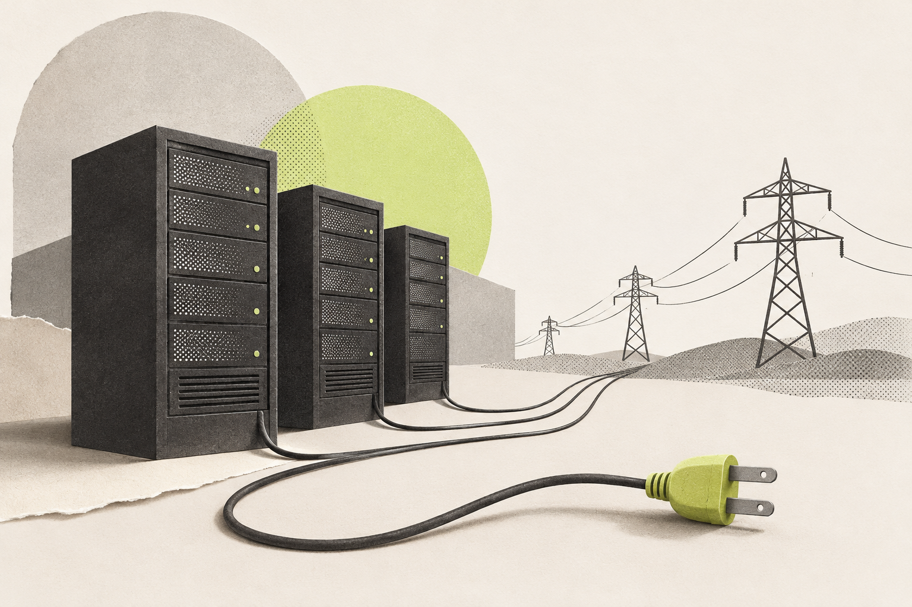

01
Practise for a test
Ask AI for practice questions about a class topic, or a simpler explanation.
Check with your notes
AI can invent facts and sources. Compare its answers with your textbook before learning from them. [2]
AI is a helpful tool, but it makes mistakes too. Let it give you a hand without letting it do all your thinking.
Start with the basicsArtificial intelligence, or AI, is software that can do tasks such as suggesting an answer or creating an image. Many AI systems learn from examples. For instance, a system can learn to recognize a cat after being shown many labelled pictures. [1]
Generative AI is the kind that creates text or images. When you ask a chatbot a question, it uses patterns learned during training to build a response. It can sound confident even when its answer is wrong. [2]
During training, the software finds patterns in large amounts of data.
You ask a question. The AI uses what it learned to produce an answer.
You compare it with a reliable source before using it.
A simple example of how a learning-based chatbot works, followed by a recommended human check.
Three examples of using AI, with a check for each. Tools vary.
Ask AI for practice questions about a class topic, or a simpler explanation.
AI can invent facts and sources. Compare its answers with your textbook before learning from them. [2]
Ask AI to turn a few notes into a polite email. Read the draft and change anything that does not say what you mean.
Do not paste someone’s private details into a tool without permission. AI may also repeat unfair ideas from its training data, so check how it describes people. [2]
Generate a school project illustration, or try different poster designs.
AI can also make fake videos or voices to trick people. If a message asks for money, call the person on a number you already know. [2]
AI runs on computers, often in large buildings called data centres. These need electricity. In its 2025 report, the International Energy Agency (IEA) estimated that data centres used 415 TWh in 2024. It forecast around 945 TWh in 2030 in its main scenario, with AI driving most of the increase. These figures cover all data centres, not just AI. [3]

Source: IEA, Energy and AI (2025), main scenario. The 2030 figure is a forecast, not a measured result.
AI could help researchers find useful materials faster. It could also help electricity companies predict demand. These are possible benefits, not guaranteed results. [3]
Many data centres in one area can put pressure on the local electricity network. My view: this needs planning, but it does not mean AI will automatically cause blackouts. The risk depends on the power available. [3]
If an AI service stops working or is attacked, people may lose a tool they depend on. My advice: keep another way to do essential tasks, and require a person’s approval before AI takes important actions. [1]
AI can help you get started.
You still decide whether the result is good enough to use.
I organized this website to explain what AI is, how it can help us, and what can go wrong. It starts with the basics, gives examples from everyday life, and then looks at the energy AI needs to run. I used short paragraphs and numbered sections to make it easy to follow.
For the design, I chose a light background with touches of lime green. The diagram and chart help explain the ideas visually. The two illustrations were made with AI and are labelled clearly. The website is designed to work on phones and computers, and people can navigate it using a keyboard.
AI assistance: I used OpenAI’s Codex to help organize the ideas, draft the text, and write the code. The website includes links to the sources so readers can check the information. It also makes clear which statements are facts, predictions, or opinions. Before submitting, I still need to review the wording and test the website. I am responsible for the final work.